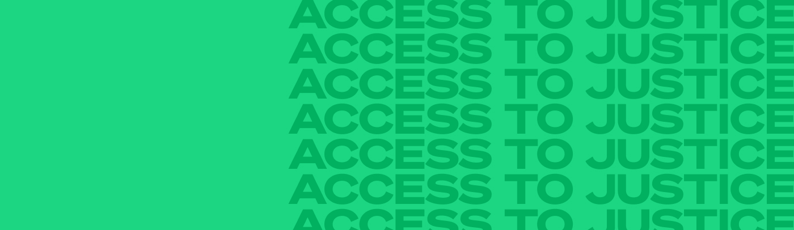
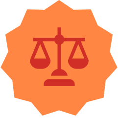
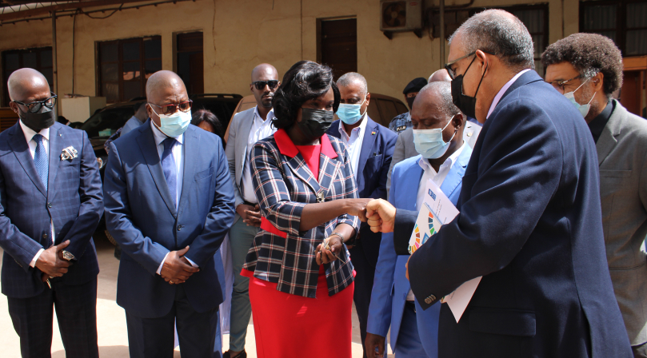
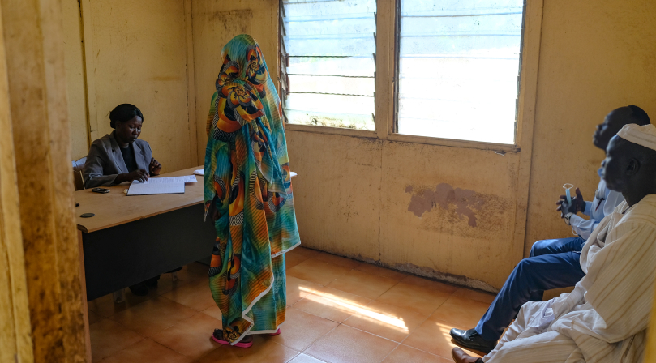

Impact by Regions, Countries & Territories
GFP Global Focal Point Highlights


Overview
Sustainable Development Goal 16 (Peace, Justice and Strong Institutions) of the 2030 Agenda highlights the importance of access to justice for all for the development of peaceful and inclusive societies. Meaningful access to justice can only be achieved when people know their rights, have the opportunities, agency and capacities to claim them, and have access to independent, inclusive and people-centred justice systems that will respond in a timely, fair and effective manner.
Access to justice is crucial to protect human rights and fight punctual or systemic inequalities, discrimination and exclusion. It is at the heart of the social contract: accountable, transparent, and people-centred justice systems, services and institutions contribute to greater respect and protection of human rights, stronger governance and rule of law, greater confidence in public administration, and increased state legitimacy. When effective and accessible mechanisms are in place to resolve disputes between individuals and between people and the state, it also contributes to conflict prevention and peacebuilding.
In 2021, UNDP continued its support to states, justice actors, civil society and communities to provide quality and accessible justice services worldwide, with a focus on conflict settings, and dedicated attention to protecting the most marginalized groups and those furthest behind.
Addressing the justice emergency
2021 was dominated by seeking solutions to stop and to recover from the COVID-19 pandemic, with states trying to manage the subsequent health, social and economic impacts of a global crisis that affected all sectors of society, including justice. The limitations and inadequacies of institutions to deliver effective justice services were highlighted and exacerbated as global demands for gender, racial, environmental and social justice increased.
In the first year of the pandemic, states and justice systems tried to adapt and innovate under pressure. For example, many introduced innovative digital approaches and tools to deliver justice services during periods of lockdown and movement restrictions. While initially seen as emergency measures, many of these innovations revealed the potential for increasing access to justice beyond the pandemic.
In 2021, UNDP supported the growth of these access to justice innovations in a number of ways. At country level, UNDP undertook tailored efforts and applied a people-centred approach to strengthen independent and accountable justice systems, improve meaningful access to justice and the quality of services.
In nearly 50 countries and territories affected by conflict, crisis and fragility, the Global Programme continued to ensure the expansion of quality justice services for individuals. Depending on the context, those most at risk of being deprived of their rights and liberties were in the focus of UNDP’s programming: women, children and juveniles, migrants and internally displaced persons (IDPs), disadvantaged ethnic minorities, LGBTQI+, incarcerated people and persons with disabilities. Legal aid systems and services were further strengthened or expanded with UNDP’s support in Côte d’Ivoire, Kyrgyz Republic, Lebanon, Liberia and the State of Palestine. In Guinea-Bissau and Syria, technical support was provided to develop mediation and alternative platforms for dispute resolution. In Mali, traditional justice mechanisms were supported to solve land disputes and prevent conflict in areas where the presence of formal security and justice actors was limited. Support to the organization of mobile courts in Burkina Faso, Democratic Republic of the Congo, South Sudan and beyond proved to be a successful mechanism to bring justice to people in remote areas, reduce the length of pre-trial detention, and fight impunity while bringing peace and renewed state legitimacy.
Fair, accessible and accountable justice systems
Customary and traditional
Mobile
Digital
Justice sector transfor-
Today’s justice challenges are complex and multi-faceted. The global demand for an end to injustice presents a challenge to UNDP and the international community to reflect and rethink conventional approaches to justice, and to innovate solutions to tackle today’s complex justice problems. To support this effort, UNDP developed a think piece, Beyond the Pandemic – The Justice Emergency, designed to stimulate and facilitate strategic conversations about UNDP’s current and future work to promote justice and the rule of law. Through this process, UNDP identified trends and areas of work that present important opportunities for harnessing the transformative potential of justice for addressing people’s immediate justice needs and the deep-rooted inequalities and injustices that undermine social cohesion and drive conflict. This analysis served also to encourage an internal reflection and inform the shifts in thinking and approach needed to understand and transform the way the international community and UNDP approach its justice work to address the justice challenges. These include embracing the paradigm of people-centred justice as a core component of UNDP’s efforts to enable transformative change.
In 2021, the Global Programme’s interventions for access to justice occurred in many areas, with activities spanning across a range of themes, including a long-standing work on gender justice and transitional justice. The linkages between access to justice and environmental justice, and the potential of e-justice and digitalization for advancing access to justice were two important areas where UNDP committed to increasing its engagement and investment moving forward.

UNDP equipped the sectorial and regional courts of Guinea-Bissau with 30 new motorcycles to ensure that officials are able to visit remote communities and provide the required services. ©UNDP/Joana Rodrigues

A mobile court judge hearing a case in Maban, South Sudan. © Kymberly Bays, UNDP